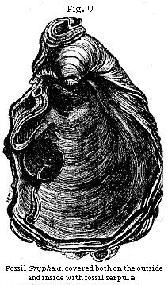
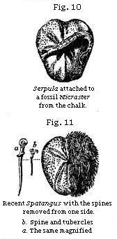
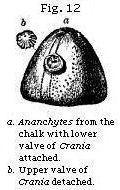
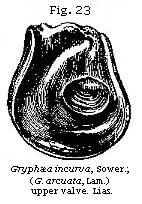
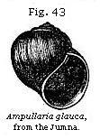

The Student’s Elements of Geology
Successive Deposition indicated by Fossils. — Limestones formed of Corals and Shells. — Proofs of gradual Increase of Strata derived from Fossils. — Serpula attached to Spatangus. — Wood bored by Teredina. — Tripoli formed of Infusoria. — Chalk derived principally from Organic Bodies. — Distinction of Fresh-water from Marine Formations. — Genera of Fresh-water and Land Shells. — Rules for recognising Marine Testacea. — Gyrogonite and Chara. — Fresh-water Fishes. — Alternation of Marine and Fresh-water Deposits. — Lym-Fiord.
Having in the last chapter considered the forms of stratification so far as they are determined by the arrangement of inorganic matter, we may now turn our attention to the manner in which organic remains are distributed through stratified deposits. We should often be unable to detect any signs of stratification or of successive deposition, if particular kinds of fossils did not occur here and there at certain depths in the mass. At one level, for example, univalve shells of some one or more species predominate; at another, bivalve shells; and at a third, corals; while in some formations we find layers of vegetable matter, commonly derived from land plants, separating strata.
It may appear inconceivable to a beginner how mountains, several thousand feet thick, can have become full of fossils from top to bottom; but the difficulty is removed, when he reflects on the origin of stratification, as explained in the last chapter, and allows sufficient time for the accumulation of sediment. He must never lose sight of the fact that, during the process of deposition, each separate layer was once the uppermost, and immediately in contact with the water in which aquatic animals lived. Each stratum, in fact, however far it may now lie beneath the surface, was once in the state of shingle, or loose sand or soft mud at the bottom of the sea, in which shells and other bodies easily became enveloped.
Rate of Deposition indicated by Fossils.—By attending to the nature of these remains, we are often enabled to determine whether the deposition was slow or rapid, whether it took place in a deep or shallow sea, near the shore or far
from land, and whether the water was salt, brackish, or fresh. Some limestones consist almost exclusively of corals, and in many cases it is evident that the present position of each fossil zoophyte has been determined by the manner in which it grew originally. The axis of the coral, for example, if its natural growth is erect, still remains at right angles to the plane of stratification. If the stratum be now horizontal, the round spherical heads of certain species continue uppermost, and their points of attachment are directed downward. This arrangement is sometimes repeated throughout a great succession of strata. From what we know of the growth of similar zoophytes in modern reefs, we infer that the rate of increase was extremely slow, and some of the fossils must have flourished for ages like forest-trees, before they attained so large a size. During these ages, the water must have been clear and transparent, for such corals can not live in turbid water.
In like manner, when we see thousands of full-grown shells dispersed everywhere throughout a long series of strata, we can not doubt that time was required for the multiplication of successive generations; and the evidence of slow accumulation is rendered more striking from the proofs, so often discovered, of fossil bodies having lain for a time on the floor of the ocean after death before they were imbedded in sediment. Nothing, for example, is more common than to see fossil oysters in clay, with Serpulæ, or barnacles (acorn-shells), or corals, and other creatures, attached to the inside of the valves, so that the mollusk was certainly not buried in argillaceous mud the moment it died. There must have been an interval during which it was still surrounded with clear water, when the creatures whose remains now adhere to it grew from an embryonic to a mature state. Attached shells which are merely external, like some of the Serpulæ (a) in Fig. 9, may often have grown upon an
oyster or other shell while the animal within was still living; but if they are found on the inside, it could only happen after the death of the inhabitant of the shell which affords the support. Thus, in Fig. 9, it will be seen that two Serpulæ have grown on the interior, one of them exactly on the place where the adductor muscle of the Gryphæa (a kind of oyster) was fixed.
Some fossil shells, even if simply attached to the outside of others, bear full testimony to the conclusion above alluded to, namely, that an interval elapsed between the death of the creature to whose shell they adhere, and the burial of the same in mud or sand. The sea-urchins, or Echini, so abundant in white chalk, afford a good illustration. It is well known that these animals, when living, are invariably covered with spines supported by rows of tubercles. These last are only seen after the death of the sea-urchin, when the spines have dropped off. In Fig. 11 a living species of Spatangus, common on our coast, is represented with one half of its shell stripped of the spines. In Fig. 10 a fossil of a similar and allied genus from the white chalk of England shows the naked surface which the individuals of this family exhibit when denuded of their bristles. The full-grown Serpula, therefore, which now adheres externally, could not have begun to grow till the Micraster had died, and the spines became detached.
Now the series of events here attested by a single fossil may be carried a step farther. Thus, for example, we often meet with a sea-urchin (Ananchytes) in the chalk (see Fig. 12) which has fixed to it the lower valve of a Crania, a genus of bivalve mollusca. The upper valve (b, Fig. 12) is almost invariably wanting, though occasionally found in a perfect state of preservation in white chalk at some distance. In this case, we see clearly that the sea-urchin first
lived from youth to age, then died and lost its spines, which were carried away. Then the young Crania adhered to the bared shell, grew and perished in its turn; after which the upper valve was separated from the lower before the Ananchytes became enveloped in chalky mud.
It may be well to mention one more illustration of the manner in which single fossils may sometimes throw light on a former state of things, both in the bed of the ocean and on some adjoining land. We meet with many fragments of wood bored by ship-worms at various depths in the clay on which London is built. Entire branches and stems of trees, several feet in length, are sometimes found drilled all over by the holes of these borers, the tubes and shells of the mollusk still remaining in the cylindrical hollows. In Fig. 14, e, a representation is given of a piece of recent wood pierced by the Teredo navalis, or common ship-worm, which destroys wooden piles and ships. When the cylindrical tube d has been extracted from the wood, the valves are seen at the larger or anterior extremity, as shown at c. In like manner, a piece of fossil wood (a, Fig. 13) has been perforated by a kindred but extinct genus, the Teredina of Lamarck. The calcareous tube of this mollusk was united and, as it were, soldered on to the valves of the shell (b), which therefore can not be detached from the tube, like the valves of
the recent Teredo. The wood in this fossil specimen is now converted into a stony mass, a mixture of clay and lime; but it must once have been buoyant and floating in the sea, when the Teredinæ lived upon, and perforated it. Again, before the infant colony settled upon the drift wood, part of a tree must have been floated down to the sea by a river, uprooted, perhaps, by a flood, or torn off and cast into the waves by the wind: and thus our thoughts are carried back to a prior period, when the tree grew for years on dry land, enjoying a fit soil and climate.
Strata of Organic Origin.—It has been already remarked that there are rocks in the interior of continents, at various depths in the earth, and at great heights above the sea, almost entirely made up of the remains of zoophytes and testacea. Such masses may be compared to modern oyster-beds and coral-reefs; and, like them, the rate of increase must have been extremely gradual. But there are a variety of stone deposits in the earth’s crust, now proved to have been derived from plants and animals of which the organic origin was not suspected until of late years, even by naturalists. Great surprise was therefore created some years since by the discovery of Professor Ehrenberg, of Berlin, that a certain kind of siliceous stone, called tripoli, was entirely composed of millions of the remains of organic beings, which were formerly referred to microscopic Infusoria, but which are now admitted to be plants. They abound in rivulets, lakes, and ponds in England and other countries, and are termed Diatomaceæ by those naturalists who believe in their vegetable origin. The subject alluded to has long been well-known in the arts, under the name of infusorial earth or mountain meal, and is used in the form of powder for polishing stones and metals. It has been procured, among other places, from the mud of a lake at Dolgelly, in North Wales, and from Bilin, in Bohemia, in which latter place a single stratum, extending over a wide area, is no less than fourteen feet thick. This stone, when examined with a powerful microscope, is found to consist of the siliceous plates or frustules of the above-figured Diatomaceæ, united together without any visible cement. It is difficult to convey an idea of their extreme minuteness; but Ehrenberg estimates that in the Bilin tripoli there are 41,000 millions of individuals of the Gaillonella distans (see Fig. 16) in every cubic inch (which weighs about 220 grains), or about 187 millions in a single grain. At every stroke, therefore, that we make with this polishing powder, several millions, perhaps tens of millions, of perfect fossils are crushed to atoms.
A well-known substance, called bog-iron ore, often met with in peat-mosses, has often been shown by Ehrenberg to consist of innumerable articulated threads, of a yellow ochre colour, composed of silica, argillaceous matter, and peroxide of iron. These threads are the cases of a minute microscopic body, called Gaillonella ferruginea (Fig. 15), associated with the siliceous frustules of other fresh-water algæ. Layers of this iron ore occurring in Scotch peat bogs are often called “the pan,” and are sometimes of economical value.
It is clear much time must have been required for the accumulation of strata to which countless generations of Diatomaceæ have contributed their remains; and these discoveries lead us naturally to suspect that other deposits, of which the materials have been supposed to be inorganic, may in reality be composed chiefly of microscopic organic bodies. That this is the case with the white chalk, has often been imagined, and is now proved to be the fact. It has, moreover, been lately discovered that the chambers into which these Foraminifera are divided are actually often filled with thousands of well-preserved organic bodies, which abound in every minute grain of chalk, and are especially apparent in the white coating of flints, often accompanied by innumerable needle-shaped spiculæ of sponges (see Chapter XVII).
How faint an idea does this exclamation of the poet convey of the real wonders of nature! for here we discover proofs that the calcareous and siliceous dust of which hills are composed has not only been once alive, but almost every particle, albeit invisible to the naked eye, still retains the organic structure which, at periods of time incalculably remote, was impressed upon it by the powers of life.
Fresh-water and Marine Fossils.—Strata, whether deposited in salt or fresh water, have the same forms; but the imbedded fossils are very different in the two cases, because the aquatic animals which frequent lakes and rivers are distinct from those inhabiting the sea. In the northern part of the Isle of Wight formations of marl and limestone, more than
50 feet thick occur, in which the shells are of extinct species. Yet we recognise their fresh-water origin, because they are of the same genera as those now abounding in ponds, lakes, and rivers, either in our own country or in warmer latitudes.
In many parts of France—in Auvergne, for example—strata occur of limestone, marl, and sandstone hundreds of feet thick, which contain exclusively fresh-water and land shells, together with the remains of terrestrial quadrupeds. The number of land-shells scattered through some of these fresh-water deposits is exceedingly great; and there are districts in Germany where the rocks scarcely contain any other fossils except snail-shells (helices); as, for instance, the limestone on the left bank of the Rhine, between Mayence and Worms, at Oppenheim, Findheim, Budenheim, and other places. In order to account for this phenomenon, the geologist has only to examine the small deltas of torrents which enter the Swiss lakes when the waters are low, such as the newly-formed plain where the Kander enters the Lake of Thun. He there sees sand and mud strewn over with innumerable dead land-shells, which have been brought down from the valleys in the Alps in the preceding spring, during the melting of the snows. Again, if we search the sands on the borders of the Rhine, in the lower part of its course, we find countless land-shells mixed with others of species belonging to lakes, stagnant pools, and marshes. These individuals have been washed away from the alluvial plains of the great river and its tributaries, some from mountainous regions, others from the low country.
Although fresh-water formations are often of great thickness, yet they are usually very limited in area when compared to marine deposits, just as lakes and estuaries are of small dimensions in comparison with seas.
The absence of many fossil forms usually met with in marine strata, affords a useful negative indication of the fresh-water origin of a formation. For example, there are no sea-urchins, no corals, no chambered shells, such as the nautilus, nor microscopic Foraminifera in lacustrine or fluviatile deposits. In distinguishing the latter from formations accumulated in the sea, we are chiefly guided by the forms of the mollusca. In a fresh-water deposit, the number of individual shells is often as great as in a marine stratum, if not greater; but there is a smaller variety of species and genera. This might be anticipated from the fact that the genera and species of recent fresh-water and land shells are few when contrasted with the marine. Thus, the genera of true mollusca according to Woodward’s system, excluding those
altogether extinct and those without shells, amount to 446 in number, of which the terrestrial and fresh-water genera scarcely form more than a fifth.*
Almost all bivalve shells, or those of acephalous mollusca, are marine, about sixteen only out of 140 genera being fresh-water. Among these last, the four most common forms, both recent and fossil, are Cyclas, Cyrena, Unio, and Anodonta (see Figures); the two first and two last of which are so nearly allied as to pass into each other.
Lamarck divided the bivalve mollusca into the Dimyary, or those having two large muscular impressions in each valve, as a b in the Cyclas, Fig. 18, and Unio, Fig. 22, and the Monomyary, such as the oyster and scallop, in which there is only one of these impressions, as is seen in Fig. 23. Now, as none of these last, or the unimuscular bivalves, are fresh-water,† we may at once presume a deposit containing any of them to be marine.
* See Woodward’s Manual of Mollusca, 1856.
† The fresh-water Mulleria, when young, forms a single
exception to the rule, as it then has two muscular impressions, but
it has only one in the adult state.
The univalve shells most characteristic of fresh-water deposits are, Planorbis, Limnæa, and Paludina. (See Figures.) But to these are occasionally added Physa, Succinea, Ancylus, Valvata, Melanopsis, Melania, Potamides, and Neritina (see Figures), the four last being usually found in estuaries.
Some naturalists include Neritina (Fig. 35) and the marine Nerita (Fig. 36) in the same genus, it being scarcely possible to distinguish the two by good generic characters. But, as a general rule, the
fluviatile species are smaller, smoother, and more globular than the marine; and they have never, like the Neritæ, the inner margin of the outer lip toothed or crenulated. (See Fig. 36.)
The Potamides inhabit the mouths of rivers in warm latitudes, and are distinguishable from the marine Cerithia by their orbicular and multispiral opercula. The genus Auricula (Fig. 31) is amphibious, frequenting swamps and marshes within the influence of the tide.
The terrestrial shells are all univalves. The most important genera among these, both in a recent and fossil state, are Helix (Fig. 38), Cyclostoma (Fig. 39), Pupa (Fig. 40), Clausilia (Fig. 41), Bulimus (Fig. 42), Glandina and Achatina.
Ampullaria (Fig. 43) is another genus of shells inhabiting rivers and ponds in hot countries. Many fossil species formerly referred to this genus, and which have been met with chiefly in marine formations, are now considered by conchologists to belong to Natica and other marine genera.
All univalve shells of land and fresh-water species, with the exception of Melanopsis (Fig. 34), and Achatina, which has a slight indentation, have entire mouths; and this circumstance may often serve as a convenient rule for distinguishing fresh-water from marine strata; since, if any univalves occur of which the mouths are not entire, we may presume that the formation is marine. The aperture is said to be entire in such shells as the fresh-water Ampullaria and the land-shells (Figs 38-42), when its outline is not interrupted by an indentation or notch, such as that seen at b in Ancillaria (Fig. 45); or is not prolonged into a canal, as that seen at a in Pleurotoma (Fig. 44).
The mouths of a large proportion of the marine univalves have these notches or canals, and almost all species are carnivorous; whereas nearly all testacea having entire mouths are plant-eaters, whether the species be marine, fresh-water, or terrestrial.
There is, however, one genus which affords an occasional exception to one of the above rules. The Potamides (Fig. 37), a subgenus of Cerithium, although provided with a short canal, comprises some species which inhabit salt, others brackish, and others fresh-water, and they are said to be all plant-eaters.
Among the fossils very common in fresh-water deposits are the shells of Cypris, a minute bivalve crustaceous animal.* Many minute living species of this genus swarm in lakes and stagnant pools in Great Britain; but their shells are not, if considered separately, conclusive as to the fresh-water origin of a deposit, because the majority of species in another kindred genus of the same order, the Cytherina of Lamarck, inhabit salt-water; and, although the animal differs slightly, the shell is scarcely distinguishable from that of the Cypris.
Fresh-water Fossil Plants.—The seed-vessels and stems of Chara, a genus of aquatic plants, are very frequent in fresh-water strata. These seed-vessels were called, before their true nature was known, gyrogonites, and were supposed to be foraminiferous shells. (See Fig. 46, a.)
The Charæ inhabit the bottom of lakes and ponds, and flourish mostly where the water is charged with carbonate of lime. Their seed-vessels are covered with a very tough integument, capable of resisting decomposition; to which circumstance we may attribute their abundance in a fossil
* For figures of fossil species of Purbeck, see Chapter XIX
state. The annexed figure (Fig. 47) represents a branch of one of many new species found by Professor Amici in the lakes of Northern Italy. The seed-vessel in this plant is more globular than in the British Charæ,) and therefore more nearly resembles in form the extinct fossil species found in England, France, and other countries. The stems, as well as the seed-vessels, of these plants occur both in modern shell-marl and in ancient fresh-water formations. They are generally composed of a large central tube surrounded by smaller ones; the whole stem being divided at certain intervals by transverse partitions or joints. (See b, Fig. 46.)
It is not uncommon to meet with layers of vegetable matter, impressions of leaves, and branches of trees, in strata containing fresh-water shells; and we also find occasionally the teeth and bones of land quadrupeds, of species now unknown. The manner in which such remains are occasionally carried by rivers into lakes, especially during floods, has been fully treated of in the “Principles of Geology.”
Fresh-water and Marine Fish.—The remains of fish are occasionally useful in determining the fresh-water origin of strata. Certain genera, such as carp, perch, pike, and loach (Cyprinus, Perca, Esox, and Cobitis), as also Lebias, being peculiar to fresh-water. Other genera contain some fresh-water and some marine species, as Cottus, Mugil, and Anguilla, or eel. The rest are either common to rivers and the sea, as the salmon; or are exclusively characteristic of salt-water. The above observations respecting fossil fishes are applicable only to the more modern or tertiary deposits;
for in the more ancient rocks the forms depart so widely from those of existing fishes, that it is very difficult, at least in the present state of science, to derive any positive information from ichthyolites respecting the element in which strata were deposited.
The alternation of marine and fresh-water formations, both on a small and large scale, are facts well ascertained in geology. When it occurs on a small scale, it may have arisen from the alternate occupation of certain spaces by river-water and the sea; for in the flood season the river forces back the ocean and freshens it over a large area, depositing at the same time its sediment; after which the salt-water again returns, and, on resuming its former place, brings with it sand, mud, and marine shells.
There are also lagoons at the mouth of many rivers, as the Nile and Mississippi, which are divided off by bars of sand from the sea, and which are filled with salt and fresh water by turns. They often communicate exclusively with the river for months, years, or even centuries; and then a breach being made in the bar of sand, they are for long periods filled with salt-water.
Lym-Fiord.—The Lym-Fiord in Jutland offers an excellent illustration of analogous changes; for, in the course of the last thousand years, the western extremity of this long frith, which is 120 miles in length, including its windings, has been four times fresh and four times salt, a bar of sand between it and the ocean having been often formed and removed. The last irruption of salt water happened in 1824, when the North Sea entered, killing all the fresh-water shells, fish, and plants; and from that time to the present, the sea-weed Fucus vesiculosus, together with oysters and other marine mollusca, have succeeded the Cyclas, Lymnæa, Paludina, and Charæ.*
But changes like these in the Lym-Fiord, and those before mentioned as occurring at the mouths of great rivers, will only account for some cases of marine deposits of partial extent resting on fresh-water strata. When we find, as in the south-east of England (Chapter XVIII), a great series of fresh-water beds, 1000 feet in thickness, resting upon marine formations and again covered by other rocks, such as the Cretaceous, more than 1000 feet thick, and of deep-sea origin, we shall find it necessary to seek for a different explanation of the phenomena.
* See Principles, Index, “Lym-Fiord.”